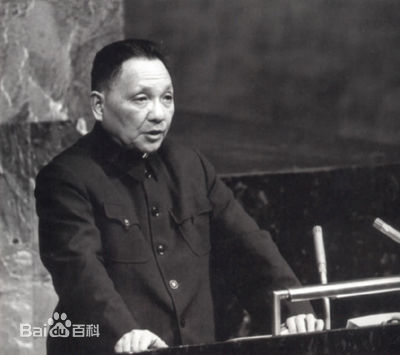
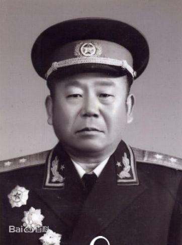

邓小平 （中国共产党第二代领导集体核心人物）
邓小平（1904～1997），四川广安人，1904年8月22日生，原名邓先圣，学名邓希贤。邓小平是中国共产党第二代领导核心领导者，伟大的马克思主义者，无产阶级革命家、政治家、军事家、外交家，中国共产党、中国人民解放军、中华人民共和国的主要领导人之一，中国社会主义改革开放和现代化建设的总设计师，邓小平理论的创立者。
邓小平早年赴欧洲勤工俭学，归国后，他全身心地投入党领导的争取民族独立和人民解放的革命斗争。从土地革命、抗日战争到解放战争，先后担任党和军队的许多重要领导职务，为党中央一系列重大战略决策的实施，为新民主主义革命的胜利和新中国的诞生，建立了赫赫功勋，成为中华人民共和国的开国元勋。
他所倡导的“改革开放”及“一国两制”政策理念，改变了20世纪后期的中国，也影响了世界，因此在1978年和1985年，曾两次当选《时代周刊》“年度风云人物”。
毕占云
毕占云（1903-1977），原名毕瑞祥。四川省广安县人（今华蓥市禄市镇）。中国共产党优秀党员，中国人民解放军优秀的军事指挥员，中国人民解放军高级将领。1955年9月被授予中将军衔，获一级八一勋章、一级独立自由勋章、一级解放勋章。
一九二七年在湘军任营长。一九二八年率部参加中国工农红军，同年加入中国共产党。土地革命战争时期，任红四军特务营营长，第四支队支队长，二纵队司令员，红十二军第一○二团团长、军参谋长、代军长，红七军第九师参谋长，红二十二军第六十六师师长、军参谋长，红一军团第一师参谋长，补充第一师师长，红八军参谋长，红九军参谋长。参加了长征。抗日战争时期，任军委一局副局长兼参谋主任，八路军后方留守处参谋处处长，绥德警备司令部参谋长，军委总部二科科长，太岳军区参谋长，太岳纵队参谋长。解放战争时期，任冀东军区副司令员，豫皖苏军区副司令员，河南军区副司令员。中华人民共和国成立后，任河南省军区司令员，武汉军区副司令员。一九五五年被授予中将军衔。是第三、四届全国人民代表大会代表。